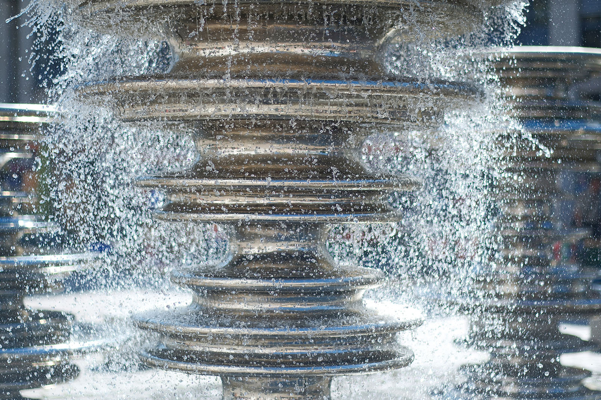
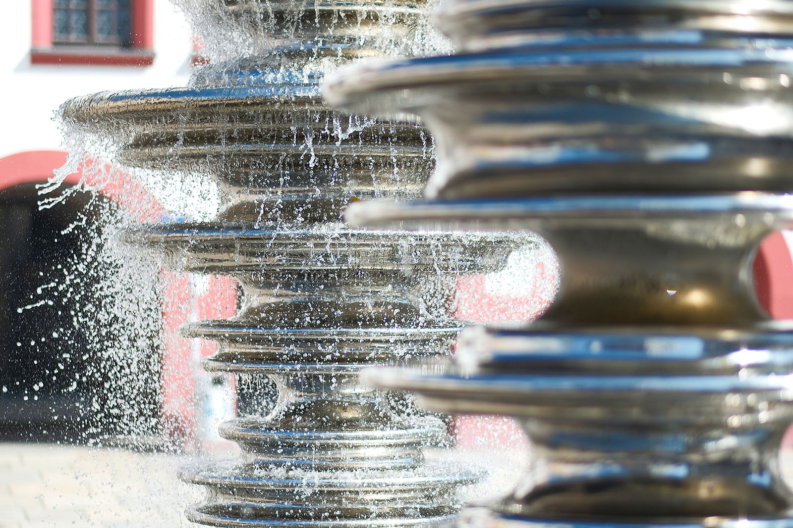
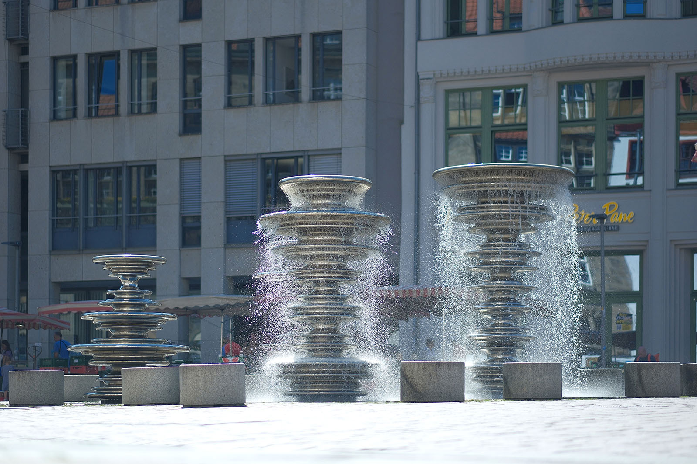

Recherche und Werkbeschreibung: Roman Pilz. Fotografien: Frank Krüger. Text und Bild wechseln sich wie in einem Magazin ab. Ein Klick auf ein Bild öffnet die Großansicht.
Der Marktplatz vor dem alten Rathaus von Chemnitz bildet seit Jahrhunderten den zentralen Handels- und Begegnungsort der Stadt. Bis heute finden hier regelmäßig Märkte und Feste statt.
Daniel Widrig wurde 1977 in Nürnberg geboren. Widrig studierte von 1998 bis 2004 Architektur an der FH Nürnberg und machte anschließend bis 2006 seinen Master of Architecture and Urbanism in London an der Architectural Association in London. Nach seinem Studium arbeitete Widrig als Entwurfsarchitekt bei Zaha Hadid Architects, London, bevor er sich 2011 mit seinem eigenen Studio in London selbständig machte.
Seine Arbeiten bewegen sich interdisziplinär im Bereich zwischen Skulptur, Mode, Möbeldesign und Architektur. Widrig nutzt für seine digitale Formfindung fortschrittliche Computertechnologien und nutzt für die Fertigung teilweise moderne Materialien und den 3D-Druck. a.
FEIDAD Award (2006), Swiss Arts Award (2007) und mit dem Rompreis Villa Massimo (2009). a. im Centre Pompidou in Paris, im Pushkin-Museum in Moskau, im Victoria and Albert Museum in London und im Neuen Museum in Nürnberg ausgestellt.
Widrig lebt und arbeitet in London. Neben seiner selbständigen Arbeit lehrt und forscht er auch an der Bartlett School of Architecture am University College London.
Der Markbrunnen mit seinen vier spindelartigen, spielgelglatten Säulen wurde 2022 auf dem Platz gegenüber dem Übergang von Altem und Neuem Rathaus eingeweiht. Er erfreut Einheimische und Besucher gleichermaßen und reizt mit seiner komplexen, reflektierenden Oberflächen als Fotmotiv. In der Regel wird das Wasserspiel ab dem Frühjahr in Gang gesetzt und bietet mit seinen vier eigenständig gesteuerten Wasserkreisläufen ein wechselhaftes Spiel zwischen den Elementen Licht, Wasser und Metall. Danneben kann man auf Sitzbänken platz nehmen und die Kinder beim Spielen beobachten oder sich im Sommer vom Wasserdunst erfrischen lassen.
In jeder alten deutschen Stadt gilt der Markt als Keimzelle und ist folglich der erste Ort herrschaftlicher und bürgerlicher Repräsentation. Mit der wachsenden Prosperität der Industriestadt Chemnitz wurde entsprechend auch der Marktplatz erstmals künstlerisch gestaltet. 1899 wurde gleich drei Plastiken des Bildhauers Wilhelm von Rümann (München) aufgestellt, die patriotisch das Kaiserreich feierten: ein Reiterbildnis von Kaiser Wilhelm I., begleitet von zwei Standbildern von Bismarck und Moltke. Nach dem Krieg wurden die Werke 1945 abgebaut.
Über 50 Jahre später wurde erstmals wieder über die Gestaltung des Markplatzes in der Stadt diskutiert. 2002 wurde von der Stadt ein erster Wettbewerb ausgeschrieben der einen künstlerisch gestalteten Brunnen vorsah. Preisträger damals war der von Timm Ulrichs eingebrachte Entwurf „Saxonia – Großer Abwasch“, der umgangssprachlich auch Tassenbrunnen genannt wurde. Der Gewinner-Entwurf wurde in der Öffentlichkeit jedoch später kontrovers diskutiert und am Ende nicht umgesetzt.

2018 wurde dann ein neuer Wettbewerb ausgeschrieben, an dem sich 114 Einreichungen beteiligten. Die Stadt wünschte sich in ihrer Aufgabenstellung zum Brunnen als magischen, sozialen und identitässtiftenden Ort einerseits die Rücksichtnahme auf die Industrietradition der Stadt und andererseits eine zeitgemäße Umsetzung, die dem Leitbild “Stadt der Moderne“ gerecht wird.
Ein Fachjury, an der neben sechs weiteren, regional verankerten Experten auch der bekannte Chemnitzer Formgestalter Prof. Karl Clauss Dietel teilnahm, wählte zusammen mit 7 Vertretern der Stadt zunächst neun Entwürfe für die Finalrunde aus. Am Ende wurde der Entwurf des aus Nürnberg stammenden Architekten, Designers und Künstlers Daniel Widrig mit dem 1. Preis ausgezeichnet. Für das Budget von 450.000 Euro (die Gesamtkosten für Brunnentechnik und Kunstwerk beliefen sich am Ende ca. 550.000 Euro) wurde die Brunnenplastik anschließend in Auftrag gegeben.
Der ursprüngliche Entwurf von Widrig sah eine Umsetzung der vier plastischen Körper als Stahlguss vor. Auf Basis seiner dreidimensional am Computer modellierten Daten sollten Schaumstoffkörpern im Maßstab 1:1 gefertigte werden, die dann im klassischen Wachsausschmelzverfahren als Formgeber fungiert hätten. Anschließend wären die Stahlgussteile dann hochglänzend poliert worden. Diese Vorgehensweise erwies sich jedoch als zu teuer. So wurde der ursprüngliche Entwurf modifiziert und schließlich durch das Verfahren des Formdrückens in einer künstlerischen Metallgießerei und -werkstatt in Hangzhou an der Ostküste Chinas hergestellt.

Polierte Edelstahlbleche wurden mit Hilfe von Schablonen in ihre dreidimensionale, von wechselnden kreisförmigen Durchmessen charakterisierte Form gebracht. Digital produzierte Hartschaummodelle im selben Maßstab dienten zur Überprüfung. Die einzelnen gebogenen Elemente wurden dann über ein Tragwerk im Inneren gesetzt und miteinander verschweißt. Material und Fertigunsweise wurden vom Künstler bewußt im Bezug auf das Erbe der Stadt Chemnitz als Ort des Maschinenbaus gewählt. Ähnliche Fertigunsprozesse sind auch aus dem Karosserie- oder Flugzeugbau bekannt.
Widrig beschreibt seine als "Manifold", zu Deutsch "Mannigfaltigkeit", titulierte Arbeit als abstraktes Sinnbild für die städtische Gemeinschaft: Die vier Säulen bilden eine Gruppe, wie die klassische, menschliche Figurengruppe in der Kunst. Jede Form für sich ist einzigartig und doch gibt es eine verbindende Ähnlichkeit. Hier wird auch der Bezug zum eigentlich aus der Mathematik und Geometrie stammenden Begriff der "Mannigfaltigkeit" deutlich. Sie beschreiben eine moderne Vorstellung räumlicher Formen und Mengeneigenschaften, die nur an bestimmten Stellen dem klassischen euklidischen Raum gleicht, global betrachtet aber vollkommen eigenen Gesetzen folgen.
Der Künstler hat in Deutschland neben Chemnitz auch weitere Kunstwerke mit architektonischem Bezug geschaffen. Im Inneren eines Universitätsgebäudes in Freiburg hängt sein 2014 geschaffenes Objekt "TransForm" und 2023 wurden zwei ähnlich spiegelnde Edelstahlkörper mit dem Titel "CLOUDS" auf dem Gelände des Fraunhofer-Instituts für Integrierte Schaltungen in Nürnberg aufgestellt.
